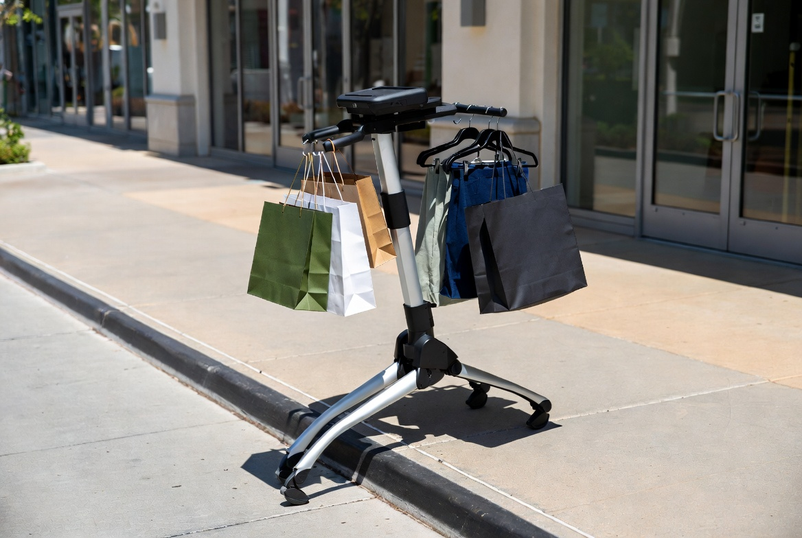
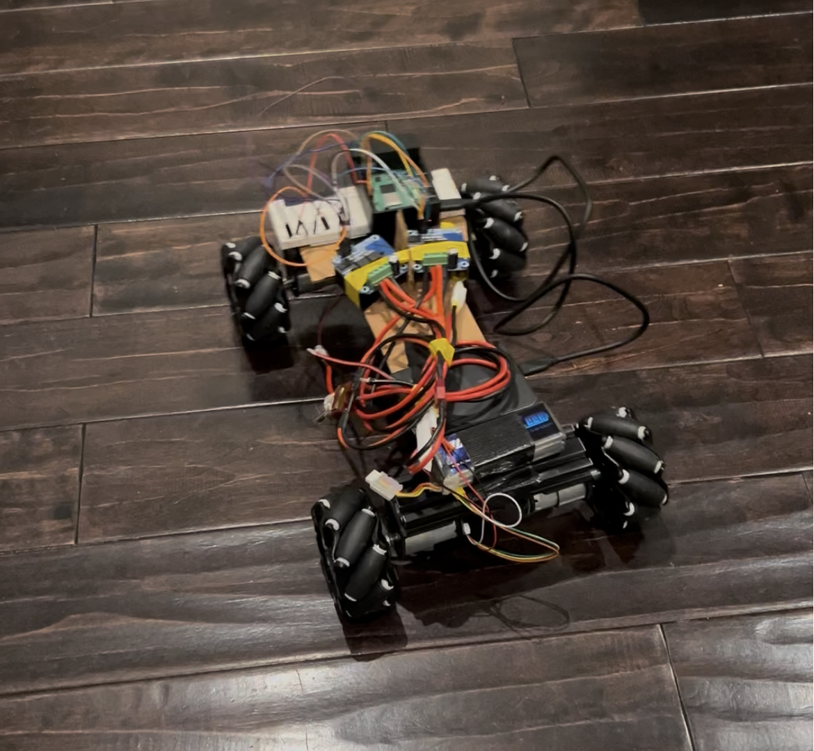

Rent
Hourly or daily at malls, events, and destination retail.
Entry wedge
A personal follow-me rover
Built for shopping first.
Designed to carry wherever people do.
01 / The problem
You stop buying. You make two trips to the car. You skip the mall because hauling bags hurts.
For older adults, people with back pain, or parents with children, carrying is not an inconvenience. It is the limit.
“The cart stays in the store.
The bags come with you.”
02 / The insight
are the navigation.
A follower needs no maps, route planning, per-store setup, or building integration. You walk; it stays with you. That reframing removes the deployment problem that kills indoor robotics.

03 / The product
04 / Working demo
Teleoperation from a laptop using the live camera feed. The hardware deadman cuts the motors if commands stop arriving.
What is not built yet: the load-bearing bag rack and person-following. This is the drive base and control loop the rest is built on.
05 / What exists today
This is a prototype, not a product.

06 / What is actually hard
The failure mode that matters is not “it got lost.” It is “it followed a stranger.”
In a crowded aisle, it must stay locked through occlusion—and refuse to move when it is not sure.
07 / Why this is not a smart cart
Different buyer. Different product. A much lower barrier to the first customer.
08 / Business model
Hourly or daily at malls, events, and destination retail.
Entry wedgeFor people who haul regularly—or cannot haul at all.
Consumer scaleSell the follow-me base as a platform for developers.
Platform upsideRental keeps the price barrier near zero and puts units in front of real users quickly.
09 / Expansion
Independent shopping
Supplies down corridors
Tools across factory floors
Airports and markets
This category should look like the mobility scooter, not the warehouse robot: affordable enough to own, trusted enough to walk behind you.
10 / Roadmap
Three engineering gates to a real-world pilot.
11 / Why me
I built Handme, a mobile manipulator whose base, arm, and hand had to work together in real time. Every delay and calibration error exposed what the plan missed.
That was version one of this journey. I am a robotics AI engineer with six years across perception, sensor fusion, SLAM, and embedded systems—and a room full of electronics that rarely behave the first time.
View engineering portfolio ↗12 / The ask
Raising a first check to build the load-bearing chassis, move vision onboard, make person-following reliable, and put prototypes in front of real shoppers.